Всё о хлебе
История
Ученые полагают, что впервые хлеб появился на земле свыше пятнадцати тысяч лет назад. Жизнь наших предков в те далекие времена была нелегкой. Главной заботой была забота о пропитании. В поисках пищи они то и обратили внимание на злаковые растения. Эти злаки являются предками нынешних пшеницы, ржи, овса, ячменя.
Древние люди заметили, что брошенное в землю зерно возвращает несколько зерен, что на рыхлой и влажной земле вырастает больше зерен.
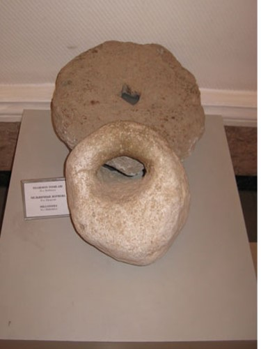Долгое время люди употребляли в пищу зерна в сыром виде, затем научились растирать их между камнями, получая крупу, и варить ее. Так появились первые жернова, первая мука, первый хлеб. Первый хлеб имел вид жидкой каши. Она и является прародительницей хлеба. Ее в наше время еще употребляют в виде хлебной похлебки в некоторых странах Африки и Азии.
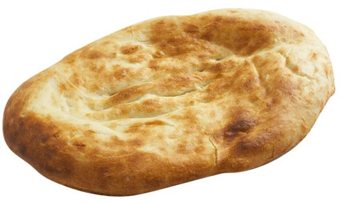К тому времени человек уже научился добывать огонь и применял его для приготовления пищи. Случайно человек обнаружил, что если перегревшиеся зерна, то есть поджаренные, раздробить и смешать с водой, каша получается гораздо вкуснее той, которую он ел из сырых зерен. Примерно шесть с половиной — пять тысяч лет назад человек научился возделывать и культивировать пшеницу и ячмень. Археологи предполагают, что однажды во время приготовления зерновой каши часть ее вылилась и превратилась в румяную лепешку. Своим приятным запахом, аппетитным видом и вкусом она удивила человека. Тогда-то наши далекие предки из густой зерновой каши стали выпекать пресный хлеб в виде лепешки.
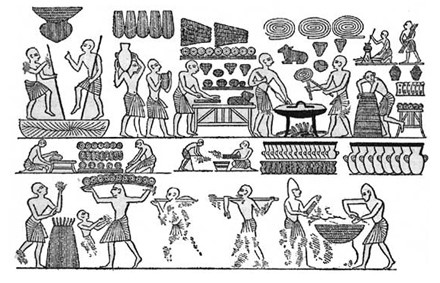Египет. Прошло еще много времени и свершилось еще одно чудо. Древние египтяне научились готовить хлеб из сброженного теста. Считают, что по недосмотру раба, готовившего тесто, оно подкисло и, чтобы избежать наказания, он все же рискнул испечь лепешки. Получились они пышнее, румянее, вкуснее, чем из пресного теста. Так в Древнем Египте было положено начало развитию хлебопекарного производства. Древние египтяне овладели искусством разрыхлять тесто с помощью брожения, которое вызывается мельчайшими организмами — дрожжевыми грибками и молочнокислыми бактериями, о существовании которых они и не подозревали. Древнеегипетские хлебопеки готовили разнообразные виды хлеба: продолговатый, пирамидальный, круглый, в форме плетенок, рыб, сфинксов. Выпекали сладкие хлебцы, в состав которых входили мед, жир, молоко, ценились они дороже, чем обычный хлеб.
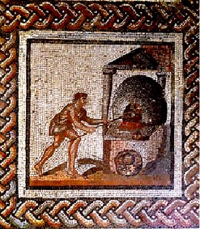Греция и Римская Империя. Искусство приготовления разрыхленного хлеба из сброженного теста от древних египтян перешло в Грецию и Римскую Империю. Такой хлеб считался в этих государствах деликатесом, доступен был только богатым, для рабов выпекался обычный хлеб — плотный и грубый. В Древней Греции хлеб считали совершенно самостоятельным блюдом и употребляли как отдельно подаваемое блюдо. Чем богаче дом и чем знатнее хозяин, тем обильнее и щедрее угощал он своих гостей белым хлебом. К хлебу относились и с суеверным почтением. Считалось, что человек, съевший пищу без хлеба, совершал большой грех и за это будет наказан богами.
Мастера-пекари рецепты хлеба держали в строжайшей тайне и передавали их из поколения в поколение. В честь мастеров возводились монументы. Так, до настоящего времени в Риме сохранилось надгробие — монумент высотой 13 метров пекарю Марку Вергилию Эврисаку, жившему 2 тысячи лет назад, основателю нескольких больших пекарен. Эти пекарни обеспечивали хлебом почти все население Рима.
Индия. Неуважение к хлебу приравнивалось к самому страшному оскорблению, какое можно нанести человеку. Большинство сортов индийского хлеба сделано из пшеничной муки очень тонкого помола из зерна, которое называется «ata». Они обычно пресные и чаще всего для их приготовления не используют дрожжи. Однако, благодаря подготовке и методам приготовления, хлеб получается восхитительно легким и воздушным.
Византия. В уставах византийских цехов X века было оговорено: "Хлебники не подвергаются никаким государственным повинностям, чтобы они безо всяких помех могли печь хлеб". Вместе с тем в той же Византии за выпечку плохого хлеба пекаря могли остричь наголо, выпороть, привязать к позорному столбу или изгнать из города.
Англия. В 1266 году в Англии был принят закон контролирующий цену на хлеб, данный закон просуществовал 600 лет. Английское титул «Лорд» произошел от слова Hlaford- loaf ward (обеспечивающий пропитание), а титул «Леди» произошел от слова Hlaefdige- Loaf kneader (месящая тесто). Лорд был добытчиком пропитания для окружающих, а его супруга Леди рассматривалась как распределительница.
Италия. В Италии хлеб до настоящего времени так и не стал частью индустрии. Он по-прежнему традиционный, особенно на юге страны, который считается «заповедником» хлебопечения. Здесь повсюду можно найти семейные булочные, где рецепты хлеба бережно передают из поколения в поколение. В Италии множество типов хлебов, очень различающихся по технологии приготовления: фокачча, брускетта, микетта, розетта, банана, биова, боволо, чиабатта, чирьола, манина феррарезе, пане казаречьо и т.д.
Швейцария. Древние жители свайных построек, расположенных на берегу озера, пекли плоские лепешки хлеба на горячих камнях и покрывали их пеплом. С развитием городов и увеличением потребностей в хлебе стали создаваться пекарные цеха. Гильдии хлебопеков разработали жесткие нормы контроля за качеством хлеба на всех этапах производства и правила эксплуатации хлебопекарных печей. Каждого булочника или мельника, нарушившего одно из правил, подвергали позорному наказанию: сажали в корзину и подвешивали перед всеми напоказ над навозной ямой. Виновный мог освободить себя, только выпрыгнув из корзины в навозную жижу на глазах любопытной толпы.
Франция. Во Франции самый главный магазин — булочная. Согласно французским законам, даже самая маленькая деревня должна быть обеспечена свежим хлебом ежедневно. Хлеб выпекают дважды в день. Разумеется, в обычный ассортимент булочной входят и все остальные деликатесы французской выпечки к завтраку: круассаны, булочки с шоколадом, бриоши. Ни один житель страны всех влюбленных, будь то элегантная француженка, беззаботный студент, или деловитый клерк, не мыслит свой идеальный завтрак без свежей и душистой выпечки.
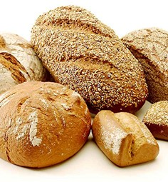Заметим при этом, что французы, несмотря на ежедневное потребление багетов и круассанов, были и остаются самой стройной нацией мира. Их секрет скрывается в любви к исключительно свежей выпечке, рецепты которой совершенствовались веками и которая при разумном употреблении не наносит вреда Вашей фигуре.
Технология вымешивания теста, которое затем превращается в хрустящий багет или миниатюрную бриошь, для французского пекаря — вовсе не скучная обязанность. Создание выпечки — это творчество, доставляющее радость.
Германия. Основа любого завтрака в Германии — хлеб и булочки. Назвать точную цифру сортов хлеба никто не берётся, потому что почти в каждом городе и регионе есть свои особые сорта, а, кроме того, едва ли не каждый день появляются новые, «модные». Конечно, тут тоже усиливаются модные тенденции. Например, сейчас последний крик — это диетические сорта с пониженной калорийностью. А кроме того, в Германии вы найдёте хлеб с любыми добавками: картофельный хлеб, морковный, капустный. Хлеб с оливами, хлеб с орехами, хлеб с тыквенными семечками. Вообще, наверное, нигде в мире не потребляется больше чёрного зернового хлеба, чем в Германии.
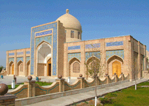Узбекистан. Согласно одному обычаю, когда кто-либо покидает дом, он откусывает кусочек Оби-нона (узбекский хлеб), а потом этот хлеб хранят до того момента, пока путешественник не возвращается и не доедает оставшийся хлеб. Другая национальная традиция — возложение корзины с хлебом на голову, так же указывает на почтительное отношение к хлебу.
Узбекский хлеб печётся в традиционных печах, сделанных из глины, которые называются «тандыр». Эти ароматные хлеба получаются хрустящими и необычайно вкусными. Издревле известный ученный медицины Авиценна использовал узбекский хлеб для лечения болезней.
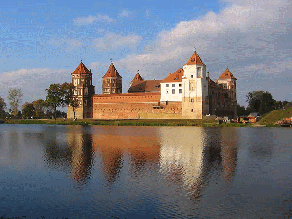Белоруссия. Белорусские хлебные изделия в своем составе содержат молочные продукты. Широко распространен подовый белорусский хлеб из смеси ржаной сеяной муки и пшеничной муки второго сорта, минский хлеб, белорусский калач, молочный хлеб, минская витушка.
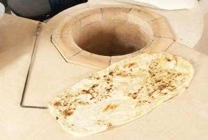Армения. В Армении из тончайших листов теста пекут знаменитый, древнейший из хлебов лаваш. Армяне не завтракают, не обедают и не ужинают - они садятся "есть хлеб". Именно так в языке обозначается любой прием пищи. Ни одна трапеза не обходится без лаваша -национального хлеба в виде длинной тонкой, легко свертываемой полосы пресного теста, длиной около одного метра. Лаваш до сих пор выпекают в древних тонирах - глиняных очагах цилиндрической формы, которые зарывают в землю.
Россия. До распространения картофеля, хлеб был основным продуктом питания в России. Изделия из теста для русского человека — это символ великого труда, вложенного в выращивание и производство хлеба, и символ благополучной жизни. Ведь пословица «хлеб — всему голова» всё ставит на своё место. Величайший в этом смысле русский обычай встречать дорогих гостей «хлебом-солью».
Основную роль в жизни русского народа играл ржаной, или, как его называли, черный хлеб. Он был значительно дешевле, однако были такие сорта ржаного хлеба, которые не всегда могли купить даже очень состоятельные люди. К ним относился, например, "Боярский" хлеб, для выпечки которого использовали муку особого помола, свежее масло, в меру сквашенное (не перекисшее) молоко, а в тесто добавляли пряности. Такой хлеб пекли только по специальному заказу для особых случаев.
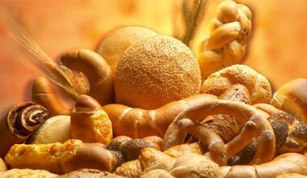Из муки, просеянной через сито, пекли ситный хлеб. Он был значительно нежнее решетного хлеба, который выпекался из муки, просеянной через решето. Низкокачественными считались "пушные" виды хлеба. Их пекли из непросеянной муки и называли мякиной. Лучшим же хлебом, который подавался на стол в богатых домах, был "крупчатый" белый хлеб из хорошо обработанной пшеничной муки. Особой любовью на Руси всегда пользовались калачи. Калач был и на будничном столе рядового горожанина, и на пышных царских пиршествах. Царь посылал калачи в знак особого расположения патриарху и другим особам, имевшим высокое духовное звание.
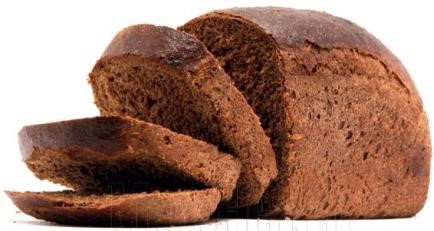С древнейших времен выпечка хлеба на Руси считалась делом ответственным и почетным. По свидетельству одного из древнейших письменных памятников - 'Домостроя', во многих поселениях были специальные избы, приспособленные для выпечки хлеба. В этих пекарнях готовили хлеб мастера, которые назывались хлебниками. Кроме хлебников, занимающихся, как бы мы теперь сказали теперь, «промышленным хлебопечением», хлеб выпекали в каждом доме, и выполняли эту работу обычно женщины. В XI столетии на Руси выпекали кислый, т. е. сброженный хлеб из ржаной муки. Производство ржаного хлеба было большим искусством, оно основывалось на применении специальных заквасок, или квасов, секрет приготовления которых держался в строжайшей тайне и передавался из поколения в поколение. Кроме ржаного хлеба в монастырских пекарнях на Руси выпекали просфоры и хлеб из пшеничной муки, сайки, калачи и другие хлебные изделия. В летописи X-XIII вв. упоминаются 'хлебы с медом, маком, творогом', ковриги, разнообразные пироги со всевозможной начинкой.
Полезная информация о хлебе
За свою долгую историю хлебная продукция обросла достаточным количеством мифов
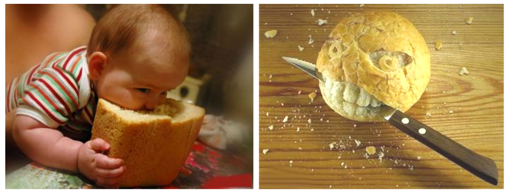В одном из них утверждается, что хлеб - самая лучшая еда, другой говорит нам об обратном.
Польза хлеба
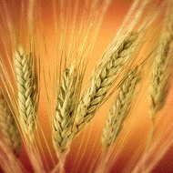- Зерно пшеницы – уникальный по своему составу продукт, собравший в себе почти всю таблицу Менделеева. В нём множество витаминов: А, Е, F, витамины группы В и другие; большое количество минералов: медь, селен, магний, кобальт, цинк, натрий, кремний, марганец, калий, йод и т.д. Эти полезные и необходимые человеку вещества содержатся в оболочке зерна и его зародыше.
- В хлебе содержаться витамины В1, В2 и РР, необходимые для поддержания нашего организма в здоровом состоянии. Витамин В1 (тиамин) нужен с целью улучшения функционирования нервной системы. Если он в достатке, то у человека хорошее настроение, его ничего не раздражает. Витамин В2 (рибофлавин) в свою очередь сохраняет нам молодость, кожу делает гладкой и эластичной. А витамин РР (ниацин) отвечает за работу мозга и сердечнососудистую систему.
- Польза белого хлеба определяется наличием в нём минеральных компонентов: кальция, фосфора и железа. Ни для кого не является секретом, что из кальция и фосфора строятся наши зубы, кости и ногти. Недаром детей с раннего возраста кормят продуктами, содержащими эти компоненты. А железо необходимо для поддержания гемоглобина в крови, который переносит кислород по организму. Недостаток гемоглобина приводит к анемии и гипоксии.
-
Белый хлеб является источником белка. А белок в свою очередь состоит из различного вида незаменимых аминокислот, в том числе метионина и лизина.
Ну и наконец, хлеб хорошо переваривается организмом. Он просто необходим для хорошего функционирования пищевого тракта. Рекомендуется употреблять белый хлеб людям с хроническим гастритом и проблемами с двенадцатиперстной кишкой. - Для тех, кто боится, чтобы есть хлеб и не навредить, нужно покупать цельнозерновой хлеб или же с отрубями. Эти сорта готовятся из муки грубого помола, которая готовится из неочищенных зерен, иногда даже и с добавлением оболочки и зародыша зерна. Он содержит в себе и витамины, и минералы, и клетчатку. Отруби обладают свойством поглощать токсины и аллергены, способствуют укреплению иммунитета, снабжают наш организм клетчаткой, ценными белками и витаминами.
- Клетчатка, содержащаяся в хлебе, проходя по кишечнику, обладает способностью забирать с собой лишний жир, находившийся в пище, и снижает уровень холестерина в крови.
Следует учитывать
Следует учитывать 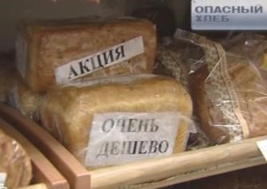- Во всем нужна мера. Разбалансировка питания, происходит от переедания булочных продуктов, которые постоянно вводимые в организм вызывают развитие всевозможных предрасположенностей. У людей, постоянно и помногу употребляющих в пищу белый хлеб и изделия из муки высшего сорта, могут чаще развиваться и обостряться сердечнососудистые, желудочно-кишечные, эндокринные и онкологические заболевания.
- На вид безвредный батон может содержать в себе огромное количество различных добавок.
- Ежегодно в Российских регионах обнаруживается и пресекается деятельность до ста подпольных хлебопекарен!
- Если учесть, какими стали сегодня остальные продукты питания, а также то, что мы привыкли есть с хлебом, то становится вполне понятным, на чём основано мнение о вреде употребления хлеба.
Можно утверждать с полной уверенностью, хлеб необходимо есть!
Главный вопрос, какой хлеб мы едим?
Свежеиспеченный хлеб
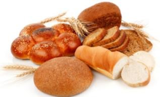Самым притягательным хлебом является именно тот, который только что достали из печки – он мягкий, хрустящий и ароматный, теплый и свежий. Но именно этот хлеб и приносит больше вреда.
Свежий, ещё тёплый хлеб - не полезен для организма
- Он тяжело разжевывается, часто скатывается в комочки, которые сложно пропитать желудочным соком и переварить. Многим, особенно людям с заболеваниями желудочно-кишечного тракта, свежий хлеб вообще категорически противопоказан – ведь он действует на желудок как лишний раздражитель, а не как полезная пища.
- Кроме того, мягкий, свежий хлеб не требует долгого пережевывания. В результате кишечник превращается в так называемый перегонный аппарат. Здесь живут микробы, которые вызывают процесс брожения. Хлебный крахмал превращается в углекислый газ и спирт. Появляются рези, боли, вздутие живота, раздражение стенок кишечника. Более того, если много съесть горячего хлеба, может произойти завороток кишок.
- Свежеиспеченный хлеб еще не «вытравил» из себя активные элементы естественного брожения. И, съедая его, вы подвергаете опасности не только свой желудок, но и многие другие органы: поджелудочная железа, двенадцатиперстная кишка, печень и многие другие. Это не значит, что свежеиспеченный хлеб опасен. Для здорового человека съедать иногда немного горячего хлеба можно, но пользы от него будет мало.
Полезно знать
Если кислотность у человека нулевая, рекомендуется употреблять в пищу свежеиспеченные изделия. Ржаной хлеб имеет повышенную кислотность, защищающую от возникновения плесени, поэтому он не рекомендуется к употреблению людям, страдающим повышенной кислотностью кишечника и язвами желудочно-кишечного тракта.
Внимание! Содержит глютен
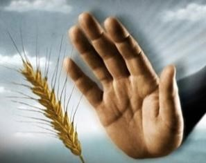Глютен — это белок, который содержится в злаковых растениях, таких как пшеница, рожь, ячмень и овес. В переводе с латинского gluten — это клей, именно благодаря ему мука, разведенная водой, становится упругой и эластичной, превращается в тесто. Недаром другое название глютена — клейковина. Что такого может быть в клейковине? С чем связано столь повышенное внимание к этому белку?
Дело в том, что у некоторых людей существует непереносимость глютена. Чаще эта непереносимость проявляется в виде аллергической реакции, но в отдельных случаях может развиваться в болезнь под названием целиакия. Целиакия — это наследственное заболевание, при котором глютен не просто вреден, а абсолютно токсичен для человека. Попадая в организм, он вызывает атрофию ворсинок кишечника, из-за чего питательные вещества, витамины и минералы плохо всасываются. В результате человек не получает с пищей самого необходимого, а обычные белки, жиры и углеводы становятся для него ядом. Для лечения целиакии лекарства не нужны. Для полного выздоровления достаточно безглютеновой диеты, которую, однако, придется соблюдать всю жизнь.
Хлеб из тостера
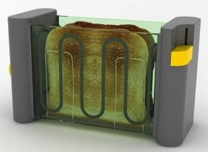Тостер подсушивает свежий хлеб, а не жарит с образованием канцерогенов. Тосты оказывают меньшее соко-гонное действие и обладают более низкой кислотностью, по сравнению со свежим хлебом, а значит, менее агрессивны для желудочно-кишечного тракта. Современные диетологи также рекомендуют вчерашний или подсушенный хлеб при язвенной болезни желудка и двенадцатиперстной кишки, при диарее, панкреатите, диабете и некоторых других заболеваниях.
Хлебцы - для похудения
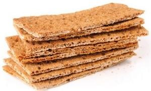Производители позиционируют свой товар, как лучшую замену хлеба. Якобы, хлебцы не только обладают всеми преимуществами цельнозерновой выпечки, но и не содержат остаточных продуктов брожения, сахара, консервантов, всяких вредных добавок. Здесь-то и надо быть начеку. Во-первых, далеко не все хлебцы могут похвастаться отсутствием вышеперечисленных составляющих: читайте этикетки! Во-вторых, калорийность хлебцев в среднем 300-400 ккал на 100 г продукта (для сравнения: в обычном хлебе – около 200 ккал). Больше того, «подсев» на хлебцы, можно и желудок «посадить». Здоровому человеку рекомендуется съедать не более 50 г хлебцев — меньше половины средней пачки.
Польза и вред сухарей
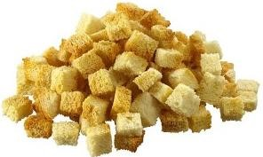Польза
- Когда человек был отравлен каким-то продуктом питания, наступает время для очищения организма и постного питания. По мнению врачей, польза сухарей в их способности помогать организму в состоянии интоксикации после отравлений. Сухари позволяют желудку восстановить нормальный режим работы, а организму восстановить силы.
- В сухарях содержится в большом количестве клетчатка. Кроме того, польза сухарей в том, что в них содержатся ряд необходимых человеческому организму микроэлементов, таких как кальций и фосфор, магний и калий, натрий и железо.
- Сухари содержат большое количество углеводов и очень хорошо перевариваются пищеварительной системой. В отличие от свежего хлеба, польза сухарей в том, что они вряд ли станут причиной метеоризма. Это особенно важно для людей пожилого возраста.
- Привычней всего видеть сухари из пшеничного хлеба, но в последние годы появилось немало ржаных сухариков. Известно, что польза сухарей из ржаной муки в их меньшей калорийности. Поэтому они очень хороши для желающих избавится от лишнего веса, не отказываясь от хлебопродуктов.
- Из сухарей давно испарились вредные вещества естественного брожения, и они совершенно безопасны. Они быстрее и легче усваиваются желудком, а это существенный плюс для любого организма.
- Хлеб через день уже может стать черствым и через 4 дня покрыться плесенью, а сухарики всегда будут у вас на виду и станут отличным перекусом с чайным напитком.
- Польза видна в самом месте приготовления. Вы знаете, что для своего здоровья никогда не сделаете ничего плохого, поэтому жарить долгое время в духовом шкафу или на сковороде вы эти сухарики не будете, а значит, и не скушаете много соли и масла.
Вред
- Хоть они и жесткие, но остаются быть хлебобулочным изделием, а значит и калорийность точно такая же, как у обычного батона.
- Есть на голодный желудок сухарики не рекомендуется, так как может произойти застой в работе желудочно-кишечного тракта, и тогда будет сложно вновь возвращать желудочный сок в нормальное состояние.
- Для людей, страдающих от язвенных болезней, как двенадцатиперстной кишки, так и желудка в стадии обострения, сухари пшеничные можно есть, но очень осторожно, а ржаные – противопоказаны.
- Еще военные заметили, что при ежедневном и частом употреблении сухарей солдаты начинают страдать расстройствами желудочно-кишечного тракта.
Поэтому для сухарей действует классическое правило сбалансированного питания - употреблять любые продукты в меру.
Дрожжи
Вредны ли для нас дрожжи?
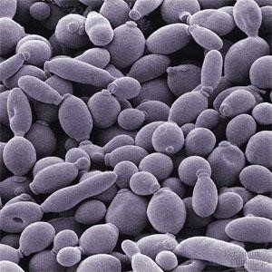Дрожжи — группа одноклеточных грибов. Границы группы очерчены нечётко. Группа объединяет около 1500 видов. Дрожжи достаточно требовательны к условиям питания.
Местообитания дрожжей связаны преимущественно с богатыми сахарами субстратами: поверхностью плодов и листьев, где они питаются прижизненными выделениями растений, нектаром цветов, раневыми соками растений, «мёртвой» фитомассой и т. д., однако они распространены также в почве и природных водах. Богатые дрожжевые сообщества развиваются на листьях, поражённых тлёй.
Дрожжи в норме присутствуют в организме человека независимо от его рациона.
Некоторые виды дрожжей с давних пор используются человеком при приготовлении хлеба, пива, вина, кваса.
Приготовление дрожжевого хлеба — одна из древнейших технологий. Происходит спиртовое брожение с образованием множества вторичных метаболитов, обуславливающие вкусовые и ароматические качества хлеба. Спирт испаряется при выпечке. Кроме того, в тесте формируются пузыри углекислого газа, заставляющие его «подниматься» и после выпечки придающие хлебу губчатую структуру и мягкость. Аналогичный эффект вызывает внесение в тесто соды и кислоты (обычно лимонной), но в этом случае вкус и аромат хлеба уступает таковому, приготовленному с использованием дрожжей.
Есть большая разница между самими видами дрожжей. Существуют дрожжевые грибки рода «Candida», они являются компонентами нормальной микрофлоры человека, однако при общем ослаблении организма травмами, ожогами, хирургическим вмешательством, длительном применении антибиотиков могут массово развиваться, вызывая заболевание — кандидоз (молочница).
В нормальных условиях в человеческом организме дрожжи рода Candida ограничиваются в своём развитии естественной бактериальной микрофлорой человека, но при развитии патологического процесса многие из них образуют высокопатогенные сообщества с бактериями.
Но они связаны с пекарскими дрожжами так же, как вы, например, с певицей Мадонной. Слышали, видели, живете на одной планете и принадлежите к виду Homo sapiens.
У диетологов за многие годы сложилось разумное отношение к дрожжам. Они рекомендуют хлебопекарные и пивные дрожжи как полезный компонент питания, как источник белка и витаминов группы В.
Дрожжи содержат важную для здоровья липоевую кислоту, в дрожжах синтезируется эргостерин — предшественник витамина D.
Противопоказания к употреблению дрожжей также известны диетологам. В дрожжах много нуклеиновых кислот, содержащих пурины. Поэтому как отдельный продукт они не подойдут для питания больных подагрой и мочекаменной болезнью. А вот при язве желудка их не употребляют из-за сокогонного воздействия. Однако люди, отдавшие предпочтение бездрожжевой выпечке хлеба, мешают своему организму усваивать полезные вещества хлеба.
Полезные физиологические свойства дрожжей позволяют использовать их в пищевой промышленности, производстве ксилита, пищевых добавок, ферментов, фармацевтике, кормовых добавок, для очистки от нефтяных загрязнений, биотехнологии. В сочетании с перегонкой процессы брожения лежат в основе производства крепких спиртных напитков.
Разновидности дрожжей для пищевой промышленности:

Пищевые дрожжи (не путать с обычными дрожжами) используемыми в выпечке, дезактивированные (подверженные тепловой обработкой), но не разрушенные дрожжи, с высоким содержанием белка и витаминов. Продаются в виде хлопьев или порошка в магазинах здорового питания и особенно популярны у веганов. Для придания блюдам «сырного» вкуса или густой консистенции добавляют в веганские версии пиццы и омлетов, супы, соусы и запеканки, посыпают ими вместо пармезана спагетти.
Хлебопекарные дрожжи — вид биологического разрыхлителя теста. Тесто с таким разрыхлителем называется дрожжевым тестом. Представляют собой микроорганизмы из семейства сахаромицетов.
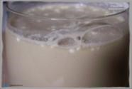Жидкие дрожжи. Используются на больших предприятиях по производству хлеба.
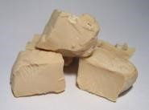Прессованные дрожжи. Представляют собой спрессованные свежие дрожжи, содержат 68 - 76% воды и 32 - 24% сухого вещества. Перед применением их следует растворить в тёплой жидкости. Одна чайная ложка сухих дрожжей соответствует 12 грамм прессованных.
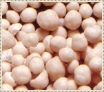Сухие активные дрожжи. В виде круглых гранул. Перед использованием их необходимо активировать, то есть растворить в тёплой жидкости, дать постоять некоторое время для размягчения и перемешать. Для получения этого продукта дрожжевая масса высушивается в течение от 10 до 20 часов в горизонтальном сушильном аппарате до влажности 7-8%. Легкость и дешевизна транспортировки, нетребовательность к условиям хранения и стабильность качества – основные достоинства сухих активных дрожжей. Главный недостаток сухих активных дрожжей выражен в потере значительной части активности в процессе сушки.
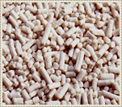Сухие быстрорастворимые дрожжи (инстантные, от англ. instant — немедленный). В виде цилиндрических гранул. Не требуют предварительной активации, сразу добавляются в муку. Технология инстантных дрожжей заключалась в использовании специального метода быстрой сушки без повреждения клеточной мембраны и консервации дрожжей вакуумом. Сушка осуществляется в горячем воздушном потоке, конечная влажность продукта составляет 4%. Время сушки сократилось до 20 минут.
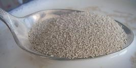Хлебная закваска
На протяжении долгого времени закваска была единственным способом заставить хлеб подняться. Первые упоминания о ней датируются временами Древнего Египта. Один человек забыл тесто и оставил его без огня, и оно под действием ферментации стало увеличиваться, создав таким образом первый хлеб на закваске.
В России чаще всего использовалась хлебная закваска, изготовленная на основе ржаной муки. Ингредиенты: мука и вода. Хлеб на закваске легче переваривается, чем хлеб на дрожжах, который в процессе подъёма теста подвергается спиртовому брожению.
Изготовление закваски
Пример: выведение твердой закваски из ржаной муки.
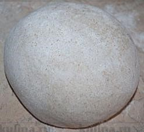Шаг №1
10 г. ржаной муки
80 мл. воды
- Перемешать до однородного состояния.
- Затем образовавшийся «шар» обволочь в муке и поместить в открытую эмалированную емкость на 12 часов при ~30°С.
Шаг №2
В емкость с «шаром» добавить:
40 мл. воды
50 г. муки
- Перемешать до однородного состояния.
- Затем образовавшийся «шар» обволочь в муке и поместить в открытую эмалированную емкость на 12 часов при ~30°С.
Шаг №3
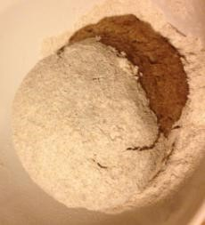Каждые последующие 12 часов: удалять 1/3 часть закваски («шара»).
К оставшейся части добавлять:
30-40 г. ржаной муки
20 мл. воды
- Перемешать до однородного состояния.
- Затем образовавшийся «шар» обволочь в муке и поместить в открытую эмалированную емкость на 12 часов при ~30°С.
КОМЕНТАРИИ: После первых 2-3 замесов тесто будет все ещё пресное, запах будет неприятный, несвойственный нормальному тесту.
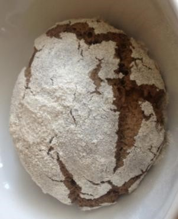Примерно после 4-6 замесов процесс брожения стабилизируется и на «шаре» перестают образовываться разрывы. Бактерии от выделившейся кислоты «погибают», а кисломолочные еще не накопились. Следует продолжать дальше.
Примерно после 6-8 замесов на «шаре» появляются трещины, которые характеризуют процесс появления и размножения «диких» дрожжей.
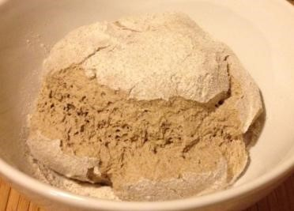При последующих 6-8 замесах «шар» приобретает мягкую и пористую структуру, на поверхности образуются крупные разрывы. Это означает, что закваска готова и ее можно использовать для выпекания хлеба.
Количество замесов до создания закваски может варьироваться от 8 до 15 раз в зависимости от качества ржаной муки.
КОМЕНТАРИИ:
На этой закваске получается очень вкусный ржаной хлеб, с легкой кислинкой.
Хранение:
Закваску хранят в холодильнике. Чтобы ее активировать после хранения необходимо повторить.
Шаг №4
На заметку:
При выпекания ржаного хлеба на закваске следует учитывать, что время подъема теста (расстойка) должно быть увеличено в 2-3 раза, в сравнении с традиционным алгоритмом работы в режиме «ржаной хлеб» (по сравнению с использованием обычных дрожжей).
Для выпекания хлеба на закваске хлебопечь должна обладать функцией изменения параметров приготовления (время, температура)
Виды муки
В муке сохранились запах полей, тепло солнца и сила ветра.
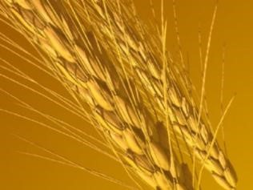Мука пшеничная
Мука пшеничная, которую получают из зерен пшеницы, сегодня является одной из наиболее популярных видов муки, основное назначение которой - выпечка хлеба и хлебобулочных изделий. Кроме того, благодаря универсальным свойствам муки пшеничной, ее применение в кулинарной сфере практически безгранично.
- Крупчатка (крупичатая мука) – это мука высокого сорта, можно сказать, что она лучшая пшеничная, у нее белый цвет и тонкий помол. Основная ее ценность - это свойство набухать, когда тесто уже замешано. Крупчатка - это самый тонкий помол, который получается отсеиванием от муки через самое мелкое сито. В старину такой муки на мельнице мололи от силы полмешка, она была очень дорогой. 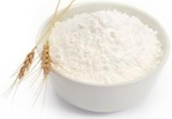
- Высшего сорта - отличается идеально белым цветом, хотя порой допускается легкий кремовый оттенок. Из этой муки получаются очень пышные и воздушные бисквиты и кексы, но пользы для организма человека от нее практически никакой. Из этой муки хорошо удаются кондитерские и сдобные хлебобулочные изделия, а также разнообразные торты. 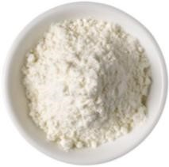
- Первого сорта отличается от высшего сорта за счет присутствия в ней относительно небольшого количества мелко перемолотых оболочек зерна пшеницы. Именно благодаря этим оболочкам цвет муки характеризуется слегка желтоватым оттенком. Тесто из муки эластичное, благодаря достаточно высокому содержанию клейковины, а приготовленные из нее изделия имеют хорошую форму, большой объем, приятный вкус и аромат. Данный сорт муки целесообразно использовать при изготовлении пирогов, булок, блинов, некоторых видов лапши и прочих блюд. 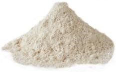
- Второго сорта. Отличительной чертой считается более темный окрас и грубоватая структура по сравнению с мукой первого сорта, так как в ней содержится значительно большее количество отрубяных частиц. Цвет такой муки может быть как светло-серый, так и почти коричневый. К сожалению, испечь из нее воздушный бисквит не получится, а при использовании рекомендуют обязательно смешивать ее с мукой пшеничной высшего сорта. Можно приготовить из этой муки блины, вафли, вареники и пельмени. Сторонники здорового образа жизни, а также люди, которые привыкли считать калории, заменили белоснежный высокосортный порошок мукой второго сорта, которая считается более полезным продуктом. 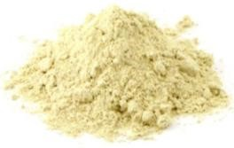
- Обойная мука (цельнозерновая) получается путем перемалывания зерна с оболочкой, ней сохраняются все полезные и целебные свойства цельного зерна. Из цельнозерновой пшеничной муки можно приготовить 100% цельнозерновой хлеб, но в этом случае рекомендуется добавлять панифарин (сухую клейковину), чтобы хлеб получился более пышным.
Мука ржаная
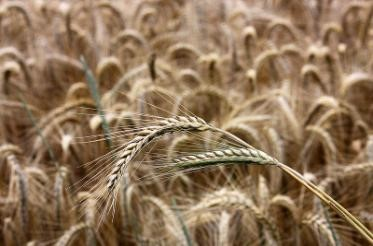Ржаная мука по сравнению с мукой пшеничной характеризуется более темным цветом, а готовые изделия из нее хранятся значительно дольше. Хлебопекарные свойства муки ржаной напрямую зависят от содержания клейковины, а этого компонента в ней чересчур мало. Клейковина, кстати, отвечает за упругость, растяжимость и эластичность теста, от чего зависит объем готового хлебного изделия, его величина, форма и структура пористости. Для того чтобы компенсировать этот недостаток, данный вид муки рекомендуют смешивать с пшеничной.
Тесто из смеси ржаной и пшеничной муки в процессе замеса достаточно сильно липнет, поэтому работать с ним довольно сложно, но ароматный ржаной хлебушек стоит того. Помимо хлеба из муки ржаной можно также приготовить кексы, блины, печенье, лепешки и пряники.
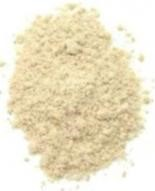- Сеяная мука является высшим сортом ржаной муки, так как вырабатывается из самых питательных клеток, которые окружают зародыш зерна. Она отличается более светлым цветом по сравнению с остальными двумя видами муки, произведенной из ржи. Изделия отличаются оригинальным вкусом и обладают невысокой калорийностью. Регулярное употребление пищи, в состав которой входит этот источник клетчатки, способствует профилактике серьезных заболеваний ЖКТ, а также снижению уровня холестерина в крови. 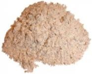
- Обдирная мука. Она на 90% состоит из питательных клеток, которые окружают зародыш ржаного зерна, а остальные 10% приходятся на оболочку зерна, которая заметна даже невооруженным глазом. Использование такой муки в кулинарии ограничено выпечкой традиционных и заварных видов хлеба. В связи с низким содержанием белков, которые отвечают за формирование клейковины в хлебе, при выпечке её следует смешивать с пшеничной мукой. 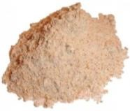
- Обойная мука. При производстве муки ржаной обойной используется цельное зерно, которое при грубом помоле преобразуется в крупные частицы, оболочки клеток и отруби. Цвет такой муки темно – серый, с коричневатым оттенком. По биологической ценности она в 3 раза превосходит пшеничную муку по содержанию калия, магния и железа. Благодаря большому количеству элементов зерна, регулярное употребление изделий из этого вида муки улучшает обмен веществ, нормализует работу сердца и желудочно-кишечного тракта, а также снижает холестерин. 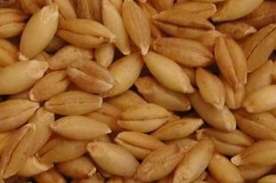
Ячменная мука
Помните знаменитые слова сказочного персонажа "я от бабушки ушел, я от дедушки ушел".
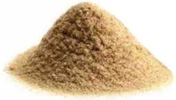Колобок - это не просто вымышленный сказочный герой, это реальное блюдо русской народной кухни, которое пекли как раз из ячменной муки. Из ячменя издавна изготавливалась мука под названием Толокно. Зерна пропаривали, высушивали, жарили и очищали, а потом толкли в специальной ступе, отсюда и название муки. Мука не имеет вкуса и запаха.
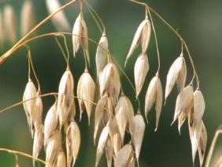Овсяная мука
Овес называют целебным злаком, полезные вещества, которые входят в состав зерна помогают людям с различными заболеваниями. Все качества овса сохраняются при его переработке, поэтому польза от овсяной муки точно такая же, как и от самого злака. Из овсяной муки пекут хлебобулочные изделия, печенье и делают кисель. Овсяная мука обязательно входит в состав знаменитого американского хлеба - Бостонский черный хлеб. Англичане давно используют пользу овсяной муки в диетических продуктах - пресной пите. Низкая калорийность овсяной муки на руку ирландцам, которые добавляют ее в вегетарианские колбасные изделия.

Калорийность овсяной муки равна 369 Ккал на 100 грамм продукта, но это совершенно не означает, что время паниковать. Блюда из овсяной муки считаются диетическими, потому что овес содержит много клетчатки и легкоусвояемых белков, которые прекрасно насыщают наш организм энергией.
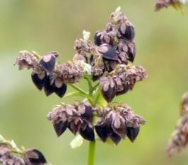Гречневая мука
Польза гречневой муки была известна еще тысячи лет назад. Содержание полезных элементов, минералов и витаминов в гречихе просто зашкаливает и не идет ни в какое сравнений со скудной пшеничной мукой. В гречневой муке очень мало сахара и углеводов, частое употребление гречихи способствует быстрому очищению организма от шлаков и других вредных веществ. При среднем уровне (353 Ккал) калорийности гречневая мука является частым ингредиентом при приготовлении диетических блюд для людей, которые страдают диабетом.
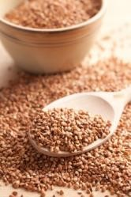Гречневая мука содержит цинк, магний, калий и железо, витамины группы В, Е, антиоксиданты и рутин. Обычная пшеничная мука не может похвастаться и половиной полезных свойств, которые есть в гречневой муке. Гречневую муку можно без проблем использовать при выпечке все тех же пирогов, блинчиков, оладьей, булочек и пирожков с начинками, которые обычно изготавливают из пшеничной муки. На основе гречневой муки можно сделать вкусные диетические пельмени.
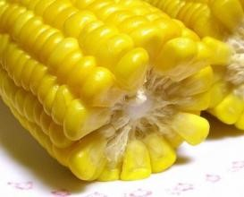Кукурузная мука
Желтую кукурузу или маис стали выращивать еще племена Майя и Ацтеков. Польза кукурузной муки заключается в таких элементах, как кальций, калий, магний, крахмал и железо, в витаминах группы В и витаминах РР. Перечислять полезные свойства состава кукурузной муки можно долго и это лишь верхушка айсберга пользы от кукурузной муки.
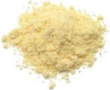Высокая калорийность кукурузной муки может считаться отрицательным качеством. Однако, стоит отметить, что при сравнительно высоком индексе жирности, кислотности и калорийность кукурузная мука легко усваивается организмом и значительно снижает уровень холестерина.
Кукурузную муку часто смешивают с другими видами муки, к примеру с пшеничной или ржаной мукой. Медики рекомендуют пациентам при восстановлении после тяжелых операций или заболеваний включать обязательно в свой рацион кукурузную муку.
Мука льняная
Льняная мука считается отличным диетическим продуктом и повсеместно используется в системе здорового питания. В льне содержится много масла, которое так же широко используют диетологи и медики для лечения различных заболеваний. После того как зерна льна перемололи, полученную массу обезжиривают и получают льняное масло. Только после процесса обезжиривания полезная льняная мука готова к употреблению. В составе льняной муки присутствует большое количество витаминов В1, В6 и В2, а также необходимая для поддержания иммунной системы фолиевая кислота.
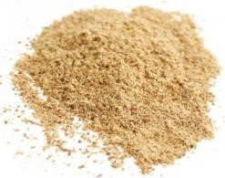Состав льняной муки богат антиоксидантами, калием, цинком и магнием. Диетические свойства льняной муки проявляются в содержании большого количества углеводов, которые помогают поддерживать нормальный вес и не вредят больным сахарным диабетом. Её можно использовать при выпечке хлебобулочных изделий как самостоятельный отдельный ингредиент, а можно смешивать с мукой другого вида, к примеру, с пшеничной. Вы можете приготовить из льняной муки оладьи, пирожки, булочки или пироги с всевозможными начинками.
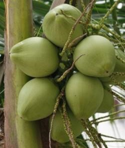Кокосовая мука
Кокосовая мука и кокосовое масло, кокосовая стружка, все эти продукты давно вошли в мировые кулинарные традиции. Кокосовая мука имеет схожий с пшеничной вид. При переработке кокосов все полезные вещества и свойства переходят в муку. Поэтому кокосовая мука невероятно полезна для организма человека. Блюда, приготовленные из кокосовой муки способны быстро улучшать пищеварение и нормализовать обменные процессы вашего организма.
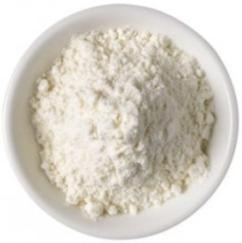Польза кокосовой муки распространяется на печень и на желчный пузырь. Известны так же и антисептические свойства кокосовой муки. В состав кокосовой муки входят пищевые волокна, которые в 4 раза превышают свое содержание в кокосе, чем в сое. Кокосовая мука считается гипоаллергенным продуктом и подходит для здорового диетического питания.
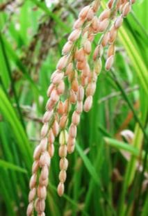Рисовая мука
Рис считается второй по значению зерновой культурой после пшеницы. По содержанию крахмала и биологической ценности белка рисовая мука по праву занимает одно из ведущих мест. Известно, что мука из зерен риса – отличный источник немалого количества натуральных макро и микроэлементов, а также витаминов. Рисовая мука – безглютеновая. Минусом отсутствия глютена считается невозможность испечь дрожжевой хлеб. Хлебушек и лепешки получаются очень хрустящими и обладают пористой текстурой.
Такой хлеб лучше всего употреблять, подсушив его на гриле или в тостере – это очень вкусно. Однако при использовании муки из рисовых зерен есть одна проблема – готовые изделия отличаются повышенной сухостью, так как данный продукт впитывает в себя много влаги. Во избежание этого достаточно просто добавить побольше жидкости или яиц в тесто и хранить готовые мучные изделия в герметичном контейнере.
Основные виды хлеба
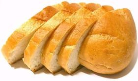Пшеничный хлеб
Готовится из высококачественной пшеничной муки. Это самый распространенный на сегодняшний день хлеб, так как, используются ингредиенты доступные в любом магазине.
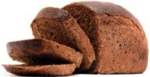Ржаной хлеб
Из такой муки получается темный и плотный. Обязательным условием для выпечки данного хлеба, является наличие режима предварительного прогрева для оптимальных условий действия дрожжей.
Для замеса теста из ржаной муки хлебопечь иногда дополнительно оснащают второй лопаткой особой конструкции. Ее использование не влияет на качество замеса, но облегчает работу двигателя.
Хлеб из муки грубого помола и непросеянной пшеничной муки
Мука, содержащая отруби более грубая, чем обычная белая, и в ней больше полезных веществ. Хлеб из непросеянной муки имеет более плотную консистенцию, а замес и подъем теста занимает больше времени. Считается, что такой хлеб полезнее, так как он имеет высокое содержание клетчатки и витаминов.
Французский хлеб
Отличительный признак французского батона - хрустящая корочка и мягкая середина. Так как при выпечке данного хлеба используется длительный режим подъема теста, и выпечка происходит при высокой температуре.
Чиабатта
Итальянский белый хлеб, который традиционно изготавливается из пшеничной муки и дрожжей. Интересно, что в переводе с итальянского его название в буквальном смысле звучит как “ковровые тапочки”. Отличительной особенностью чиабатты являются очень хрустящая корочка наряду с нежной ароматной мякотью, которой характерна крупная неравномерно распределенная пористость.
Сдоба
Старорусское значение сдобы произошло от слов сдабривать или сдобрения, т.е. улучшать свойства какого-либо предмета. Существует несколько видов сдобных ингредиентов: молоко, сливки, масло, жиры, яйца или яичный порошок, а также меланж. В тесто для сдобы нередко добавляют изюм, сухофрукты, орехи, а также пряности, сахар и патоку. Тогда сдобное тесто получается более нежным и питательным. Бывают сладкие, соленые, шоколадные, карамельные сдобные изделия.
Основные виды теста
Дрожжевое тесто
Может быть более или менее сдобным. В первом случае кладется больше сдобы: масла, сахара, яиц. Из него пекут воздушные ватрушки и булочки. Второй вид теста подходит для обычного хлеба. Два способа замеса теста. При безопарном способе ингредиенты сразу смешивают, а при опарном дают тесту сначала пару часов отстоятся.
Тесто бездрожжевое
Видов бездрожжевого теста достаточно много: бисквитное, сдобное, пресное, заварное, песочное, слоеное и некоторые другие. Существует два вида приемов разрыхления: химический (углекислый аммоний и питьевая вода) и механический (раскатка - в случае со слоеным тестом или взбивание - это касается бисквитов).
Пельменное тесто
В классический рецепт пельменного теста обязательно входит пшеничная мука, свежие куриные яйца и немного воды или молока. Настоящий русский пельмень должен быть белоснежным. Тесто для пельменей замешивается так, чтобы впоследствии оно максимально тонко раскатывалось.
Тесто для пиццы
Замешивается без яиц, на молоке с добавлением оливкового или подсолнечного масла для эластичности (соль и сахар по вкусу, дрожжи по необходимости).
Тесто для пасты
Классическими составляющими для данного теста являются мука, яйца, соль. Иногда для придания окраса добавляют, например, томатный сок, шпинатное пюре или другие компоненты.
Советы начинающему пекарю
Дрожжи
Обращайте внимание на дату изготовления при покупке дрожжей. Старые или несвежие дрожжи влияют на аромат и высоту хлеба. После вскрытия упаковки дрожжей поместите остаток в холодильник для сохранения их активности и старайтесь использовать остаток как можно быстрее. При использовании дрожжей, взятых из холодильника или морозильной камеры, необходимо довести их температуру до комнатой, т.к. охлажденные дрожжи не обладают активностью. В соответствии с типом, количеством и свежестью дрожжей может получиться булка хлеба различного размера. Дрожжи быстрого брожения рекомендованы для режима быстрой выпечки хлеба.
Мука
Клейковина - белковое вещество, содержащееся в муке, образует структуру хлеба. Для выпечки различной продукции используются определенные сорта муки. Добавление муки грубого помола, пшеничных отрубей, ржаной или ячменной муки придает выпечке определенный аромат и текстуру. Перед приготовлением желательно просеять муку, это позволит насытить её кислородом и достичь желаемого результата. Некоторые виды муки не выдерживают высокой температуры и влажности. Следует хранить муку в сухом и прохладном месте.
Соль
Соль контролирует активность дрожжей и обеспечивает плотность теста, а также предохраняет от чрезмерного брожения.
Сахар
Обеспечивает процесс ферментации дрожжей, придает хлебу вкус и цвет, а также влияет на мягкость. Вместо сахара можно добавлять мед или черную патоку (свеклосахарная) в том же количестве. Добавляя различное количество сахара, можно изменять цвет продукции (больше сахара – темнее корочка).
Жиры
Масло, маргарин или шортенинг (пищевой жир) перед использованием должны быть комнатной температуры. Это обеспечивает получение наилучших результатов при выпечке. Жиры предотвращают затвердевание хлеба и предают ему аромат.
Молочные продукты
Молочные продукты, такие как сухое и свежее молоко оказывают большое влияние на вкус и цвет выпечки. При использовании таймера отсрочки старта рекомендуется использовать сухое молоко и воду, в противном случае свежее молоко может прокиснуть. При высокой комнатной температуре (выше 27 oC) необходимо температура жидкости должна быть около 4-5 oC (температура воды, охлажденной в холодильнике).
Вода
Вода добавляется в муку для формирования клейковины и является существенным фактором, влияющим на результаты выпечки. При высокой комнатной температуре (выше 27 oC) нужно использовать охлажденную воду с температурой около 4-5 oC (температура воды, охлажденной в холодильнике).
Яйцо
Добавляя в тесто яйца можно улучшить аромат и цвет выпечки. Это также позволяет обеспечивать мягкость выпечки. При добавлении к рецепту 1 целого яйца нужно уменьшить объем другой жидкости на 1/8 мерной чашки.
На что способна хлебопечь
Освоив приготовление основной буханки, в которую входит лишь мука, вода, сахар, дрожжи, соль и сухое (или свежее) молоко, можно начать печь хлеб с добавлением зерен, специй, орехов и семечек и даже свежих и тушеных овощей! Хлебопечь запросто испечет хлеб с жареным луком, сушеными грибами или помидорами, запеченными перцами, хрустящим беконом, с копченым мясом или тертым сыром и травами. Также можно приготовить сладкие кексы с шоколадом, фруктами и ягодами и т.п. Также хлебопечь великолепно готовит варенье и джемы, которые придутся по душе сладкоежкам. При этом не придется стоять часами и помешивать тяжелым половником. Хлебопечь все сделает сама! А сладкоежкам останется только наслаждаться любимым угощением.
Хлебопечи способны приготовить тесто для выпечки, пиццы, пельменей, макарон и т.п. А всевозможные кексы, приготовленные в хлебопечи, станут хорошим дополнением к праздничному столу.
Принцип работы хлебопечи
В принципе, все хлебопечи работают по одинаковой технологии. Каждая из них снабжена формой для выпечки с антипригарным покрытием. Дно формы оборудовано съемным тестомесом, который состоит из поворотного механизма и лопатки для замеса теста.
Для того чтобы испечь хлеб, достаточно насыпать в печь необходимое количество ингредиентов, которые указаны в рецепте: дрожжи, сахар, сухое молоко, муку, соль и добавить масло и воду. Самое главное, ингредиенты не должны быть перемешаны. После закладки продуктов закрыть крышку и выбрать соответствующую программу. Все остальное хлебопечь сделает сама!
В основном режиме с тестом будет происходить следующее:
- Замес 1
- Подъем
- Замес 2
- Подъем
- Выпечка
Далее хлебопечь сообщит звуковым сигналом о готовности Вашего хлеба.
Хлебопечь выполнит всю тяжелую и требующую внимания работу вместо Вас.
На что обращать внимание
Количество программ
В первую очередь необходимо определиться, какой хлеб будет выпекаться, так как для разного типа будет использоваться своя программа. Будь то обычный белый или французский. У каждой программы свое время и режимы. Чем больше программ – тем больше выбор по готовой продукции!
В современных моделях можно встретить от 5-ти до 17-ти автоматических программ.
Программы пользователя
У некоторых моделей есть возможность вносить в память собственные рецепты.
Особо продвинутые модели имеют по несколько программ пользователя.
Самым последним достижением, является функция изменения основных программ, а также возможность изменения температурных режимов.
Дисплей
Жидкокристаллический, иногда с подсветкой.
Чем он больше, тем удобнее: на маленьком помещаются лишь цифры, указывающие окончание процесса.
Большой дисплей, как у Bork X800, предоставит всю информацию о настройках печи, времени и текущем состоянии процесса приготовления хлеба или булок.
Подсветка облегчает пользователю контроль за процессом приготовления в условиях плохой освещенности. Возможны два варианта реализации этой функции: подсвечивание фона дисплея или только цифр.
Вес готового хлеба
Вес хлеба, испеченного хлебопечью может колебаться от 450 г до 1500г. Каждый может подобрать себе такую модель, которая необходима, в зависимости от количества членов семьи или количества съедаемого хлеба.
Но стоит знать, что с увеличением веса готовой продукции увеличиваются габариты агрегата.
От массы получаемого изделия зависит продолжительность выпекания и необходимая температура.
Основным минусом большого хлеба является неравномерность промесса и низкое качество пропекания в центре между тестомесами.
Практически все модели предусматривают несколько размеров получаемой продукции. От 2-х вариантов до 4-х.
Формы чаши
Некоторые новые модели имеют две формы для выпечки.
Одна, это обычная прямоугольная форма для хлеба, вторая – круглая. Таким образом, появилась возможность выпекать не просто хлеб, а настоящие круглые куличи и кексы
Способы извлечения чаши
Чаши можно извлекать по-разному.
Первый вариант - когда ее надо немного повернуть и потянуть вверх.
Второй вариант - тянуть чашу вверх без поворота.
Привод тестомеса хлебопечи
Металл + пластик.
Используется в хлебопечах Panasonic. Благодаря данному факту аппарат работает значительно тише, но со временем, пластик, под действием достаточно высокой температуры, может деформироваться. Образуется люфт и уровень шума повысится.
Металл + металл
Используется всеми остальными производителями. Уровень шума более высокий, но это компенсируется надежностью!
Диспенсер
Специальное устройство в крышке хлебопечи. Оно предназначено для автоматического добавления дополнительных ингредиентов (сухофруктов, изюма, орехов) непосредственно в процессе приготовления выпечки. Это удобно, например, при использовании таймера, когда хлеб печется ночью на утро: не нужно вставать и добавлять вручную изюм и другие добавки для сладкого хлеба. Добавки при этом сохраняются целыми, а не размельченными.
Если такое устройство отсутствует, то в нужный момент прозвучит звуковой сигнал, напоминающий о необходимости добавить ингредиенты.
Встречаются два типа механизма открытия крышки диспенсера: механический и электромагнитный. Во втором случае полностью исключается возможность заклинивания механических частей.
Смотровое окно и подсветка
Важные опции, позволяющие контролировать процесс приготовления хлеба.
Кто-то скажет: “Зачем это нужно, ведь есть автоматические программы?” Но ведь во всех духовых шкафах есть эти опции!
Например, мы решили, что цвет корочки недостаточно темный, как нам хотелось бы. Можно не открывая крышку и не выпуская теплый воздух, включить печь на допекание.
Хотя компания Panasonic утверждает, что специально не устанавливают эти окна, так как через них уходит тепло и качество выпечки ухудшается.
Съемная крышка
Съемная конструкция крышки позволит легко очистить прибор после его использования.
Функция памяти
Она есть почти у всех хлебопечей: если электричество отключается, печь сохраняет программу от 30 секунд до 60 минут, в зависимости от модели, а при включении питания автоматически возвращается к прерванному циклу и продолжает работу.
Запуск по таймеру
Возможность установки времени запуска программы, либо времени, через которое выпечка должна быть готова (в зависимости от производителя или конкретной модели).
С помощью этой функции вы всегда будете получать свежую выпечку в удобное для вас время. Так, можно установить программу вечером, и утром вас разбудит аромат горячего хлеба. Также легко можно запрограммировать прибор, чтобы выпечка была готова днем или вечером к вашему возвращению. Наличие таймера может оказаться очень полезным, если в вашем доме стоимость электроэнергии зависит от времени суток. Вы сможете назначить начало приготовления на ночное время, когда тарифы наиболее низкие.
Материал корпуса
Большинство моделей изготавливаются из пластика - недорогого и легкого материала. Но у пластика есть один существенный недостаток – он, со временем, желтеет. Так же этот материал менее прочный, чем металл.
Замок от детей
Данная функция часто встречается во многих бытовых электроприборах, но хлебопечи оснащаются ей крайне редко
Блокировка позволит не беспокоиться о том, что ребенок сможет отменить или изменить программу приготовления.
Складной тестомес
Некоторые модели комплектуются складными тестомесами, которые не надо извлекать из готового хлеба и не портить внешний вид буханки.
Поддержание температуры
По окончании программы прибор не отключается, а продолжает работать в экономичном режиме, чтобы выпечка оставалась теплой до того момента, когда вы сможете извлечь её из формы и не образовывался конденсат.
Процессы выпечки (кулинарные термины)
Процесс выпечки включает в себя следующие технологические процессы:
-
Замес теста
Тестомес получает тяговое усилие от электродвигателя, который расположен в днище прибора и вымешивает тесто до получения однородной массы. -
Добавка ингредиентов
Осуществляется, как правило, во время второго замеса.
На этом этапе добавляются дополнительные ингредиенты из диспенсера или вручную через специальное отверстие. Тестомес при этом продолжает вращаться. -
Расстойка
Во время этого процесса тесто отстаивается при оптимальной температуре, которая создается нагревательным элементом. Происходит активация дрожжей и подъём теста. -
Обминка
Тесто обогащается кислородом и освобождается от углекислого газа в процессе перемешивания. -
Окончательная расстойка
Происходит непосредственно перед выпеканием. -
Выпекание
Около часа готовое тесто выпекается при температуре до 150°С. -
Подогрев
После завершения процесса выпекания поддерживается определённая температура, поэтому отсутствует конденсации влаги и сохранения изделия в тёплом виде. Продолжительность этого процесса может составлять от 1 до 4 часов при температуре примерно 60°С.
100% ржаной хлеб на закваске
Для выпекания хлеба на закваске хлебопечь должна обладать функцией изменения параметров приготовления (время, температура).
Этап №1
Ингредиенты:
- 100 г. закваски
- 250 мл. воды комнатной температуры
- 220 г. ржаной муки
- 1 столовая ложка сахара
Программируем режим:
Выбираем режим CUSTOM»
Присваиваем программе номер 1
Изменяем параметры программы «BASIC»
На начальном этапе программирования параметров цвет корочки и вес не имеет значения, так как не происходит выпекание
- KNEAD 1 - 5 минут
- KNEAD 2 - 20 минут
- RISE - температура 34°С
- RISE 1 - 1:40 минут
- RISE 2 - 1:40 минут
- RISE 3 - 1:40 минут
Итого - 5:25 минут
На этом этапе тесто увеличивается в объеме под действием дрожжей из закваски.
Этап №2
Ингредиенты:
- 320 г. ржаной муки
- 220 мл. теплой воды
- 0,5 чайной ложки соли
- 1 чайная ложка измельченного кориандра + 1 столовая ложка для обсыпки
Программируем режим:
Выбираем режим «CUSTOM»
Присваиваем программе номер 2
Изменяем параметры программы «BASIC»:
- Цвет корочки: «DARK»
- Вес выпечки: 1,25 кг
- KNEAD 1 - 5 минут
- KNEAD 2 - 20 минут
- RISE - температура 34°С
- RISE 1 - 1:40 минут
- RISE 2 - 1:40 минут
- RISE 3 - 1:40 минут
- BAKE - 1:10 минут.
- Температура - 150°С
- KEEP WARM - 1 час
Итого - 6:35 минут
На этом этапе тесто увеличивается в объеме под действием дрожжей и выпечка
Приготовление деревенского масла в хлебопечке BORK X800
Ингредиенты:
- Сливки 25% или более
- Соль и сахар по вкусу
Универсальная складная лопасть
Программа «CUSTOM»
Выбираем режим «BASIC» и изменяем его
- Выставляем цикл второго замеса «KNEAD 2» на 1 час
- Все остальные циклы выставляем на 0
В форму для выпекания выливаем 0,5 литра охлажденных сливок
Включаем хлебопечь
Через 30 мин. нажимаем кнопку «Пауза» и выливаем образовавшуюся пахту
Продолжаем работу хлебопечи
Через 10 мин. опять выливаем образовавшуюся пахту и заливаем 2 стакана холодной воды, ещё через 10 мин. опять выливаем образовавшуюся пахту и заливаем 2 стакана холодной воды
По окончании программы выливаем всю жидкость, извлекаем масло и убираем в холодильник
Приготовление каши в хлебопечке X800
Ингредиенты:
- 1 чаша риса
- 2 чаши кипятка
- 2 чаши молока
- Соль и сахар по вкусу
Лопасть для джема
Программа «CUSTOM»
Выбираем режим «BASIC» и изменяем его
Выставляем цикл выпекания «BAKE» на 1 час при температуре 120 градусов
Все остальные циклы выставляем на 0
Помещаем все ингредиенты в чашу для выпечки и включаем программу
Через 1 час каша готова!
Приготовление питьевого йогурта в хлебопечке X800
Ингредиенты:
- Молоко (6℅)
- Йогурт с живыми бифидобактериями
Небольшие ёмкости с герметичными крышками
В ёмкости наливаем молоко и йогурт комнатной температуры (в соотношении 9/1 и перемешиваем)
Извлекаем лопасть
Программа «CUSTOM» Выбираем режим «BASIC» и изменяем его- Выставляем цикл
- «RISE 1» на 1 час. 40 мин.
- «RISE 2» на 1 час. 40 мин.
- «RISE 3» на1 час. 40 мин.
- Температура 34 ˚С
- Все остальные циклы выставляем на 0
В форму для выпекания на ¾ заливаем теплую воду
Включаем хлебопечь
После окончания программы выставляем:
- «RISE 1» на 1 час. 40 мин.
- «RISE 2» на 20 мин.
- Температура 34 ˚С. Все остальные циклы выставляем на 0.
По окончании программы извлекаем ёмкости с йогуртом и ставим в холодильник.